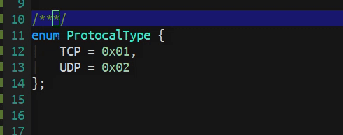
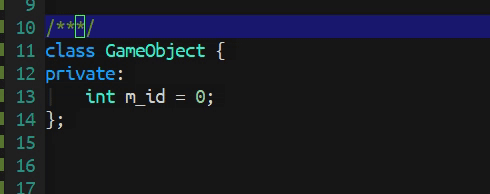

docstr#
A document string minor mode.

This package provides a simple solution for the insertion of documentation strings into code.
Usage#
You can enable this package for a specific major mode:
;; Enable `docstr' inside these major modes.
(add-hook 'actionscript-mode-hook (lambda () (docstr-mode 1)))
(add-hook 'java-mode-hook (lambda () (docstr-mode 1)))
Or if you just want to enable it inside a specific buffer just call docstr-mode as a command through the minibuffer:
M-x docstr-mode
You can also enable this package in all buffers via:
(global-docstr-mode 1)
Supported Languages#
Here is a list of all languages that are supported by this package:
- ActionScript
- C / C++ / C#
- Golang / Groovy
- Java / JavaScript / JSX
- Lua
- Objective-C
- PHP / Python
- Ruby / Rust
- Scala / Swift
- TypeScript
You can customize the docstr-writers-alist variable to add your own documentation string support for your favourite language. Just add a cons cell like (mode-name . docstr-writer-name).
To create your own documentation string writer, you need to create a function that takes in one argument. For instance:
(defun my-docstr-writer (search-string)
;; Insert documentation string here.
)
The argument search-string will then be populated by the appropriate trigger function in docstr-trigger-alist. See the variable docstr-trigger-alist for more information. For instance, a C# trigger could look like this:
("/" . docstr-trigger-csharp)
And the trigger function could look like this:
(defun docstr-trigger-csharp (&rest _)
"Trigger document string inside C#."
(when (and (docstr--doc-valid-p) (looking-back "///" 3))
(save-excursion
(insert " <summary>\n")
(insert "/// \n")
(insert "/// </summary>"))
(forward-line 1)
(end-of-line)
(docstr--insert-doc-string (docstr--c-style-search-string 2))))
In this example, docstring insertion is triggered only when certain conditions are met; the function docstr--insert-doc-string will be called last of all to insert the actual docstring content. (docstr--c-style-search-string 2) is the search-string passed on to the documentation string writer which writes a proper documentation string based on its information.

Before/After Insertion#
You can customize documentation before or after the docstring insertion.
There are two hooks you can customize:
docstr-before-insert-hookdocstr-after-insert-hook
The use case of this is to provide some kind of set up. For instance, some programming languages would add @desc before an actual description. The following would implement this:
(add-hook 'docstr-before-insert-hook (lambda (search-string) (insert "@desc ")))
Of course, I would recommend you add it locally so it is language specific. Let's try to apply only to TypeScript and only within typescript-mode:
(defun my-typescript-mode-hook ()
(add-hook 'docstr-before-insert-hook
(lambda (search-string) (insert "@desc "))
nil t))
(add-hook 'typescript-mode-hook #'my-typescript-mode-hook)

Advanced Implementation#
You can also customize documentation strings by running before/after hooks. The following are advanced examples for documentation strings in C++:
| Preprocessor | Enumerator |
|---|---|
 |
 |
| Structure | Class |
|---|---|
 |
 |
Documentation Strings#
You can customize default documentation strings by tweaking these variables.
Type Name#
docstr-format-type- default:"{ %s }"
The default is wrap around curly brackets. It only takes one %s for the type name.
docstr-show-type-name- default:t
If you don't want the type name to be shown; then setting docstr-show-type-name to nil will do the trick. For instance, if you don't want the type name to be shown in java-mode do the following.
(add-hook 'java-mode-hook (lambda () (setq-local docstr-show-type-name nil)))
docstr-default-typename- default:typename
You can change this value if you don't like the default type name. This variable is generally used for programming languages that aren't statically typed like Python, JavaScript, PHP, etc.
Variable Name#
docstr-format-var- default:"%s :"
The default is having a colon : at the back of the variable name. It only takes one %s for the variable name.
Parameter & Return#
docstr-format-param- default:@param #T##V##D#docstr-format-return- default:@return #T##V##D#
You can customize these variables for different documentation styles. See the following table for the desciption of the keys #T#, #V# and #D#:
| Key | Description |
|---|---|
#T# |
Key represent type name. |
#V# |
Key represent variable name. |
#D# |
Key represent description. |
P.S. These variables are constant.
Default Descriptions#
Here is a list of default description strings that you can customize. These strings are placeholders to remind you to replace these strings with content descriptions.
docstr-desc-summary- default to"[summary]".docstr-desc-param- default to"[description]".docstr-desc-return- default to"[description]".docstr-desc-typename- default to"[type]".
Faces Configuration#
This package provides a way to customize the document string faces in a consistent way, though this is an optional choice. To enable this feature, you can put the following code snippet into your configuration:
(docstr-faces-apply)
There are three faces that you can customize for documentation strings:
docstr-faces-tag-face- Highlight the tag face; like@param,@return, etc.docstr-faces-type-face- Highlight the type name face.docstr-faces-value-face- Highlight the variable name face.
Multiline Docstrings & Keys#
Make sure you have starting and ending comments before triggering documentation string insertion using this package. For instance, you will need /* and */ before hitting return. There are several packages that can help you achieve this. You can also enable variable docstr-key-support for the built-in support from this package.
;; This fixes auto pairing for documentation strings which fulfill conditions
;; from the multiline documentation string trigger.
(setq docstr-key-support t)
Contribute#

If you would like to contribute to this project, you can either clone and make pull requests to this repository. Or you can clone the project and establish your own branch of this tool. All methods are welcome!